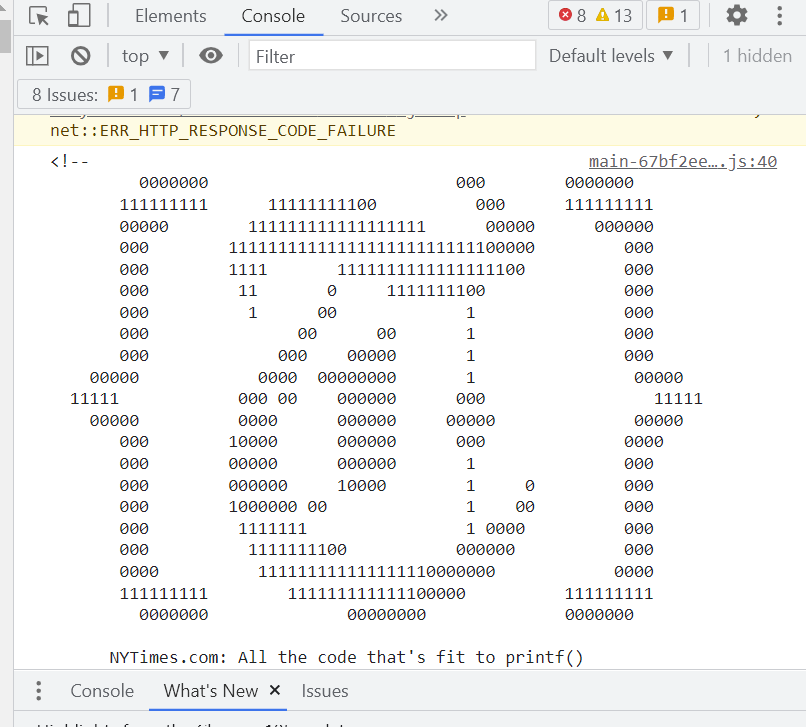

DIG 245 View Source
How to View Source Code (on a Windows Computer):
- Open up the Chrome browser.
- Find a web page whose source code you would like to view.
- Right-click on the page and select "View page source," or use the shortcut "ctrl+U".
- A new tab with the code should appear!
What to do with Dev Tools:
- The "Elements" section allows you to edit the CSS and HTML code and see how the updates impact your page in real time.
- You can also scroll to or hide different elements by right-clicking specific lines of code to help you easily edit your page.
- In the "Console" section, you can check and edit Javascript or CSS for the webpage, or even find a secret message!
Metaphor
Looking at the code is like pulling back a curtain. On a presentation-ready stage, much like a webpage, everything seems to run smoothly and seamlessly.
Behind the scenes is, to an untrained eye, chaos. But for those who understand the workings of HTML and other code, inspecting a webpage and revealing what's
behind the curtain can be informative in how the production actually runs (not by magic).
Secret Message
First, open the
New York Times.
Then, right-click and select "Inspect". Next, click on the "Console" option. View the secret message!

Turtles!
Turtles are my favorite animal. I like their sense of calmness and go-with-the-flow.